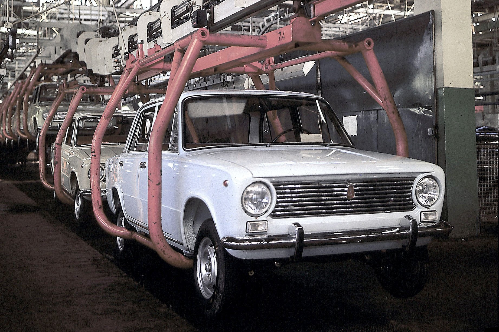
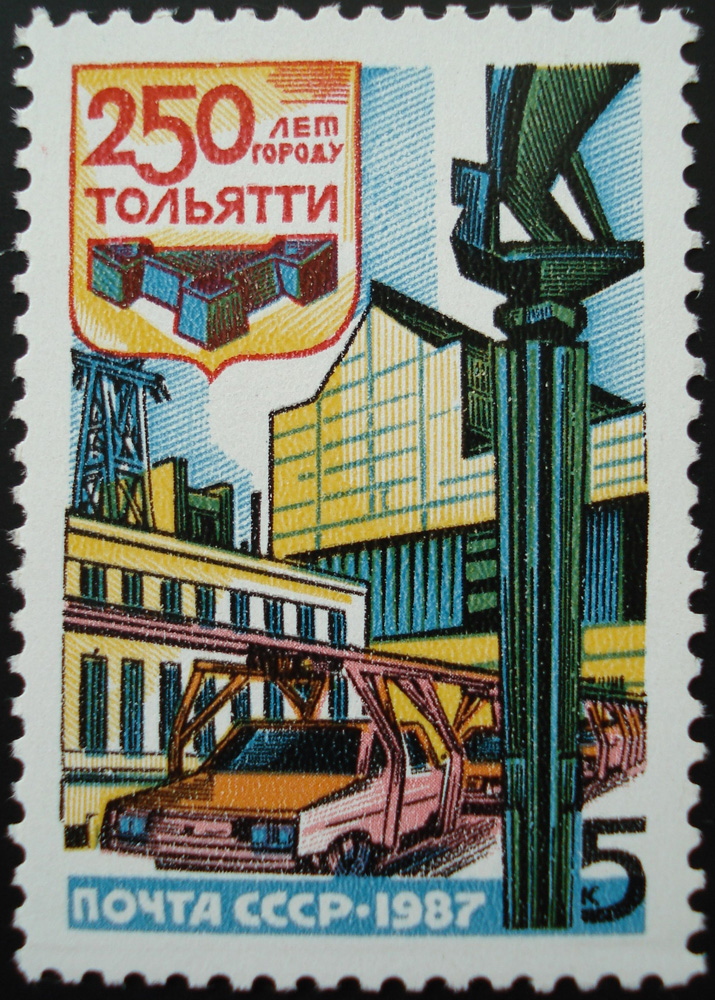
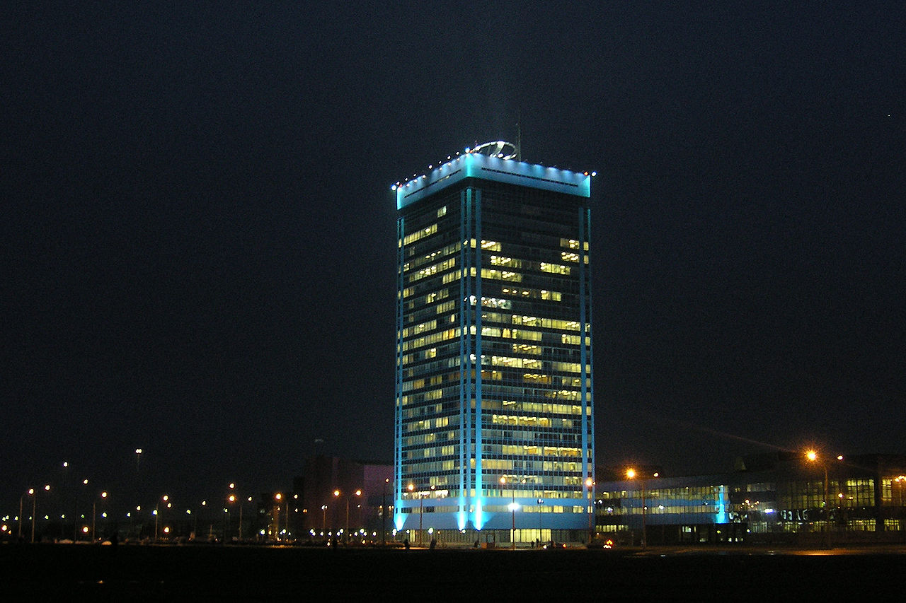
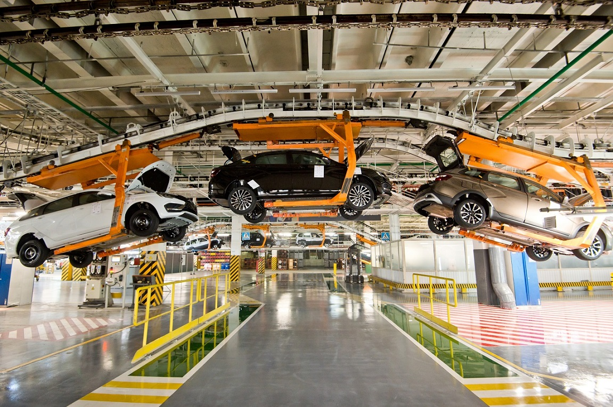

С начала 1960-х годов в мире, в частности в высокоразвитых странах Европы, начался автомобильный бум. С каждым годом росло количество выпускаемых автомобилей, рос парк частных автомобилей. В СССР покупка автомобилей частными лицами стала возможна с 1948 года. В начале 1950-х выбор был невелик: между относительно дешёвым «Москвичом» и дорогой «Победой» (позднее «Волгой»). К тому же количество выпускаемых автомобилей «Москвич» было недостаточным, чтобы покрыть спрос, а потому самым доступным личным транспортом долгое время оставались мотоциклы и мотороллеры.
Советское государство ещё в конце 1950-х пыталось исправить ситуацию, поручив создать и запустить в производство по-настоящему «народный автомобиль». Таковым предполагалось сделать «Запорожец». Для этого был переоборудован бывший Запорожский комбайновый завод, ставший Запорожским автомобильным заводом «Коммунар». Однако многие слои населения автомобиль «Запорожец», относившийся к микролитражному классу, не устраивал. Проанализировав сложившуюся ситуацию, правительство под председательством Алексея Косыгина предложило построить новый автомобильный завод, который мог бы выпускать свыше полумиллиона легковых автомобилей в год и таким образом удовлетворять спрос населения на личное автотранспортное средство. Для ускорения создания такого предприятия было решено привлечь иностранных специалистов, благо такой опыт в СССР имелся ещё в конце 1920-х — начале 1930-х годов.
Уже в 1964 году начались поиски возможных зарубежных партнёров. Изучались автомобильные производства Федеративной Республики Германия (Фольксваген), Франции (Рено) и Италии (Фиат). Велись переговоры. Окончательный выбор пал на итальянский концерн Fiat, который был известным в Европе производителем легковых автомобилей различного класса и к тому же был в состоянии выпускать свыше 600 тысяч автомобилей в год и смог бы спроектировать такой завод-гигант, что было одним из главных условий. В частности в 1966 году концерн представил свою новую модель малого класса Fiat 124. Именно эта модель и была выбрана в качестве основной, базовой, а также ещё две модификация FIAT 124 Familiare (с кузовом типа «универсал») и Fiat 124 Speciale (автомобиль класса «люкс»), производство которых предстояло освоить в СССР.
20 июля 1966 года, после анализа 54 различных строительных площадок, из которых были выбран шорт-лист из семи предпочтительных вариантов, ЦК КПСС и Советом министров СССР принято решение о строительстве нового крупного автомобильного завода в городе Тольятти, переименованном двумя годами ранее вне связи со строительством завода (по легенде, название города даже вызвало неудовольствие у руководства компании). По совокупности факторов он опередил Минск и Киев по цене и стратегическому расположению в случае войны. Подготовка технического проекта была поручена итальянскому автомобильному концерну Fiat. 15 августа 1966 года в Москве глава Fiat Джанни Аньелли подписал контракт с министром автомобильной промышленности СССР А. М. Тарасовым по созданию автозавода в городе Тольятти с полным производственным циклом. По контракту на этот же концерн возлагалось технологическое оснащение завода, обучение специалистов.
3 января 1967 года ЦК ВЛКСМ объявил строительство Волжского автозавода Всесоюзной ударной комсомольской стройкой. Тысячи людей, в основном молодёжь, направились в Тольятти на стройку завода. Уже 21 января 1967 года был вырыт первый кубометр земли под строительство первого цеха завода — корпуса вспомогательных цехов (КВЦ).
С 1969 года начали формироваться трудовые коллективы завода, в большинстве это были люди, строившие завод. Продолжился монтаж производственного оборудования, произведённого на 844 отечественных заводах, 900 заводах социалистического содружества.
1 марта 1970 года первые 10 кузовов будущих автомобилей выдал цех сварки, а 19 апреля 1970 года с главного конвейера завода сошли первые шесть автомобилей ВАЗ-2101 «Жигули», внешне похожих на итальянскую модель «Fiat-124», но со значительными изменениями (в общей сложности в конструкцию Fiat 124 было внесено свыше 800 изменений, после чего он получил наименование Fiat 124R). 15 апреля 1970 года Волжский автомобильный завод посетил Генри Форд-младший. 28 октября 1970 года в Москву был отправлен первый поезд с автомобилями «Жигули».
Конвейер с ВАЗ-2101

24 марта 1971 года Государственная комиссия приняла в эксплуатацию первую очередь Волжского автозавода, которая будет выпускать 220 тысяч автомобилей в год. 16 июля 1971 года был выпущен 100-тысячный автомобиль марки «ВАЗ». 10 января 1972 года Государственной комиссией подписан акт о приёмке в эксплуатацию второй очереди Волжского автозавода мощностью 220 тысяч автомобилей в год. Официально завод был принят Государственной комиссией с оценкой «отлично» 22 декабря 1973 года — после выпуска миллионного автомобиля; указом президиума ВС СССР Волжский автомобильный завод был награждён орденом Трудового Красного Знамени. За архитектуру комплекса Волжского автомобильного завода в 1977 году была вручена Государственная премия СССР в области литературы, искусства и архитектуры.
Проектная мощность завода в 1970-х годах составляла 660 тысяч автомобилей в год, к началу 1990-х мощность достигла 740 тысяч. На 1 февраля 2012 года проектная мощность завода составляла 900 тысяч автомобилей в год.
В декабре 1977 года Волжский автозавод был награждён Дипломом почёта ВДНХ СССР «За разработку и внедрение автоматизированной системы управления производством (АСУП)». Золотой медалью ВДНХ за разработку и внедрение АСУП был награждён заместитель генерального директора АвтоВАЗа по экономике и планированию — Пётр Макарович Кацура.
Почтовая марка СССР, посвящённая 250-летию города Тольятти (1987 г.)

8 апреля 1986 года завод посетил Генеральный Секретарь ЦК КПСС Михаил Сергеевич Горбачёв.
В 1987 году была выпущена почтовая марка СССР, посвящённая 250-летию города Тольятти, где в стилизованном виде изображены: стела с Ладьёй, главный конвейер и здание металлургического корпуса. «АвтоВАЗ» стал первым предприятием в СССР, на котором в ноябре 1982 года с помощью логической бомбы в компьютерной программе, выполненной программистом Муратом Уртембаевым, был остановлен заводской сборочный конвейер.
В 1993 году на базе ВАЗа пытались создать Автомобильный всероссийский альянс (AVVA) с программой выпуска народного автомобиля при участии Бориса Березовского. В 1996 году руководитель ВАЗа Каданников стал заместителем премьера Черномырдина.
В 1990-х — начале 2000-х годов за контроль над заводом разразилась ожесточённая преступная война, в ходе которой погибло порядка 500 человек, среди которых: известные в городе бандиты, предприниматели, сотрудники милиции, журналисты, общественные деятели, менеджеры завода.
В 1991 году автозавод завершил прокладку собственного оптоволоконного кабеля до села Шигоны (включившись в магистральный узел «Ростелеком») — для выхода на прямую междугородную и международную телефонную связь. Часть оптического кабеля была проложена по дну Куйбышевского водохранилища. Осенью 1999 года в результате автоэкспедиции «Тибет-99», организованной из Санкт-Петербурга на двух автомобилях Lada 4x4 5D и одном ВАЗ-2120, был осуществлён рекордный горный подъём на удлинённой «Ниве» до отметки 5726 метров.
С 25 августа 2002 по 25 июля 2004 года существовала лотерея «АвтоВАЗ», где разыгрывались призы только по номерам купленных билетов, главный приз которой — автомобиль ВАЗ — Жигули.
В августе 2007 года стало известно, что «АвтоВАЗ» планирует продать иностранному инвестору блокирующий пакет (25 %) акций, и в декабре последовала договорённость с французской автомобилестроительной корпорацией Renault. 29 февраля 2008 года сделка состоялась. Окончательная сумма сделки будет зависеть от итогов работы ОАО «АвтоВАЗ» в 2008—2009 годах, но не превысит 1,2 млрд $. После погашения казначейских акций завода, «Renault» получит контрольный пакет акций. В итоге на сентябрь 2008 года основными акционерами компании являлись: Renault (25 %), «Ростехнологии» (25,1 %) и «Тройка диалог» (25,64 %).
Автомобили «АвтоВАЗа» являлись самыми угоняемыми в Москве в 2008 году.
Здание заводоуправления ночью

В результате экономического кризиса 2008—2009 годов и вызванных им проблем со сбытом продукции в начале 2009 года ОАО «АвтоВАЗ» попал в сложную финансовую ситуацию. На конец марта 2009 года долг поставщикам составил около 14 млрд руб. За 9 месяцев 2009 года производство упало на 43,5 % к соответствующему периоду предыдущего года.
30 марта 2009 года Правительством России было принято решение о выделении государственной корпорации «Ростехнологии» 25 млрд руб., которые та, в свою очередь, в виде беспроцентной ссуды сроком на год передаст ОАО «АвтоВАЗу».
Также модельный ряд ОАО «АвтоВАЗ» попал под государственную программу субсидирования процентных ставок по автокредитам.
В сентябре 2009 года руководством компании было объявлено о массовом сокращении персонала: до конца 2009 года собирались сократить 27,6 тыс. работников из 100 тысяч. По словам представителей ОАО «АвтоВАЗ», это должно было стать одной из мер на пути к недопущению банкротства крупнейшей российской автомобилестроительной компании. Впрочем, уже в начале октября стало известно, что в Правительстве России было согласовано увольнение только 5 тыс. человек, а первый вице-премьер Правительства Игорь Шувалов заявил: «Никаких увольнений и сокращений на предприятии не планируется. Это всё враньё». В итоге почти 22,5 тысячи работников компании были уволены в 2009 году, из них 11,5 тысячи оформили пенсию и 2,3 тысячи — досрочную пенсию. Оформление такой «массовой» досрочной пенсии явилось беспрецедентным для России явлением. Период кризиса сказался на качестве продукции: в октябре 2009 года «АвтоВАЗ» в презентации бизнес-плана отметил, что производит автомобили «чрезвычайно низкого» качества, и назвал себя неэффективным по многим пунктам. Одной из причин такой ситуации было названо «низкое качество покупных комплектующих».
В то же время, в октябре 2009 года Министерство промышленности и торговли Российской Федерации в письме в аппарат правительства заявило, что в нынешнем виде ОАО «АвтоВАЗ» фактически является нежизнеспособным, находясь в предбанкротном состоянии (по расчётам министерства, на начало 2010 года долг завода будет составлять 76,3 млрд руб.). По мнению Минпромторга, дальнейшая государственная поддержка предприятия нецелесообразна, а спасти ситуацию в Тольятти можно лишь сократив до 50 тыс. сотрудников ОАО «АвтоВАЗ» и потратив средства, которые предполагается выделить ОАО «АвтоВАЗ», на стабилизацию рынка труда в Самарской области.
В ноябре 2009 года Кристиан Эстев, генеральный директор Renault в России заявил, что по предложениям французской стороны на ОАО «АвтоВАЗ» планируется организовать производство автомобилей марок Renault, Nissan и Lada на базе единой платформы В0 (платформа Logan), а также оставить производство своих автомашин класса ultra low cost (возможно, на базе «Калины»). В ноябре 2009 года российское Правительство заявило о готовности оказать ОАО «АвтоВАЗ» поддержку в размере 54,8 млрд руб. Из этой суммы 38 млрд — это невозвратные долги, ещё 12 млрд руб. пойдёт на создание и запуск в производство нового модельного ряда и ещё 4,8 млрд руб. необходимо для реализации программы создания новых рабочих мест. Госкорпорация «Ростехнологии» и Renault подписали 27 ноября 2009 года протокол о сотрудничестве в рекапитализации ОАО «АвтоВАЗ». Соглашение предусматривает финансовую помощь ОАО «АвтоВАЗ» со стороны РФ в обмен на помощь Renault в использовании технологий Renault и Nissan.
В 2010 году в рамках антикризисного плана АвтоВАЗ приступил к реализации программы «ЛАДА КАЧЕСТВО», разработанной группой специалистов во главе с директором по развитию качества Паскалем Фельтеном и направленной на улучшение качества продукции завода. К обеспечению контроля качества была привлечена служба Common Supplier Quality and Supplier Development, созданная в марте 2010 года. В январе 2012 года дирекцию по качеству возглавил бывший топ-менеджер Renault Лоран Фофан, ранее занимавшийся улучшением двигателей автомобилей французской марки. Модернизация производства привела к значительному росту качества продукции, которое к 2013 году улучшилось в 10 раз: «В 2013 году АвтоВАЗ сравнял уровень качества с партнёрами по альянсу — компаниями Renault и Nissan. Сегодня фактический уровень по качеству — 38 PPM (дефектов на миллион единиц продукции). За последние три года АвтоВАЗ улучшил показатели качества продукции более чем в 10 раз». На следующий год, по сообщению Бу Андерссона, качество повысилось ещё на 20 %, затем ещё на 30 %.
10 марта 2010 года совет директоров ОАО «АвтоВАЗ» одобрил бизнес-план до 2020 года, по которому планируется рост производства автомобилей до 1,2 млн штук в год к концу 2010-х годов, а также инвестиции в предприятие за 2010—2020 годы в размере до 3 млрд евро.
26 августа 2010 года президент ОАО «АвтоВАЗ» Игорь Комаров сообщил, что чистая прибыль ОАО «АвтоВАЗ» за январь-июль 2010 года составила 24 миллиона рублей по РСБУ против убытка за аналогичный период 2009 года.
12 декабря 2012 года в Москве президент альянса Renault-Nissan Карлос Гон объявил о создании совместного предприятия с государственной корпорацией «Ростехнологии», под названием Alliance Rostec Auto BV. На конец 2013 года Alliance Rostec Auto BV владел 76,25 % акций ОАО «АвтоВАЗ».
В январе 2014 года объявлено об очередном значительном сокращении персонала предприятия: согласно приказу нормативная численность руководителей, специалистов и служащих будет снижена на 2,5 тысячи штатных единиц, а снижение численности рабочих будет на 5 тысяч штатных единиц. Согласно ежеквартальному отчёту компании, на 1 января 2014 года на заводе работают более 67 тысяч человек.
23 января 2014 года компания сообщила, что собирается уволить 7,5 тысяч работников со следующим возмещением: уволившиеся в феврале получат по пять среднемесячных зарплат (составляет около 20 тысяч рублей), в марте — по четыре зарплаты, в апреле — по три. Предложение о выплате компенсаций действует только эти три месяца.
В июне 2014 года альянс Renault-Nissan получил контроль более чем над 50 % акций компании, доля «Ростеха» снизилась до 24,5 %. Также в 2014 году проведён ряд изменений, направленных на преобразование условий труда и отдыха работников: запрещены новогодние корпоративы за счёт предприятия, ликвидирована насчитывавшая более 600 тыс. томов библиотека (часть книжного фонда передана местному колледжу), отремонтированы за счёт продажи корпоративных иномарок душевые, туалеты и раздевалки, а также запрещено держать в служебных помещениях комнатные цветы.
Несмотря на все преобразования 2014—2015 годов, предприятие не стало прибыльным — убыток по итогам 2015 года превысил 73 млрд рублей. В 2015 году компания показала отрицательную валовую маржу, что вызывает сомнение в экономической эффективности бизнеса как такового. Убытки финансировались за счёт привлечения дополнительных кредитов. В 2015 году средняя ставка по рублёвым банковским кредитам, которые являются основными для компании, увеличилась до 12,55 % (с 11,51 % в 2014 г.). Выплаты по процентам удвоились с 4 до 8 млрд руб. за тот же период. В структуре баланса показатель капитала ушёл в минус, что является одним из сигналов возможного предбанкротного состояния предприятия.
1 апреля 2015 года «АвтоВАЗ» представил свой новый логотип, а автомобиль Vesta стал первой моделью, которая начала выпускаться с обновлённым логотипом.
По итогам I квартала 2016 года чистый убыток компании составил 8,589 млрд рублей против 178 млн рублей, то есть в 47 раз больше, чем за аналогичный период 2015 года. Одновременно выручка ПАО «АвтоВАЗ» сократилась на 20,8 % до 38,417 млрд рублей. Такие данные следуют из отчётности по МСФО, опубликованной компанией. Основной причиной роста убытков ПАО «АвтоВАЗ» стало падение спроса на российском авторынке. В I квартале 2016 года общие розничные продажи Lada составили 56 879 шт., или на 17 % меньше, по сравнению с аналогичным периодом 2015 года. Сократилось и производство автомобилей на АвтоВАЗе (Lada, Renault, Nissan, Datsun) — на 34 % по сравнению с I кварталом 2015 года до 96 498 автомобилей.
17 июня 2019 года на пост председателя совета директоров назначен бывший президент компании Николя Мор. Сергей Скворцов, ранее занимавший эту должность, занял пост заместителя председателя совета директоров. С 1 октября 2019 года Оливье Морне (Olivier Mornet) займёт пост исполнительного вице-президента по продажам и маркетингу АО «АвтоВАЗ». В этой должности он сменит Яна Птачека, который продолжит свою карьеру в периметре Groupe Renault.
Конвейер с современными моделями

В мае 2022 года завод был передан в управление ФГУП «НАМИ». Соглашение о передаче активов предполагает, что свой контрольный пакет «АвтоВАЗа» (67,7%) Renault передает под управление НАМИ с опционом обратного выкупа в течение 6 лет.
Планируется выпуск моделей Lada Granta, до конца лета начать производство Niva Legend и Niva Travel, а в среднесрочной перспективе — перезапуск Vesta и Largus.
15 августа сотрудники автосборочного производства «АвтоВАЗа» досрочно перешли на пятидневный график работы, вместо действовавшего до этого четырёхдневного, введенного 6 июня из-за трудностей с комплектующими. С 29 августа запланирован переход на шестидневных режим работы. Ранее было сообщено о планах «АвтоВАЗа» выпустить во втором полугодии 2022 года почти 140 тыс. автомобилей, что в два раза больше чем в предыдущие 6 месяцев.
23 августа «АвтоВАЗ» сообщил, что возобновил выпуск Lada Granta с двумя подушками безопасности. Ранее Lada возобновила выпуск машин с обогревом ветрового стекла, парктроником, аудиосистемой и кондиционером.
7 февраля 2023 года «АвтоВАЗ» сообщил о приобретении 99 % долей бывшего завода Nissan в Санкт-Петербурге у ФГУП «НАМИ» за 1 евро в рублевом эквиваленте. 1 % — остался у ФГУП. По условиям сделки сохранятся колл-опцион для японского концерна по обратному выкупу своего предприятия в России в течение шести лет. По заявлению замглавы Минпромторга Альберта Каримова, перед «АвтоВАЗом» поставлены задачи не только по запуску производства автомобилей на бывшей площадке Nissan в Санкт-Петербурге, но и по уверенному повышению уровня локализации продукции.
По сообщению руководства предприятия, на заводе в Санкт-Петербурге в 2023 году запланирован выпуск около 10 000 автомобилей под брендом Lada в сегментах C и D. В 2025—2027 годах на бывшей площадке Nissan, при позитивном тренде на рынке, планируется производить до 50-70 тысяч автомобилей.
9 июня 2023 года «АвтоВАЗ» объявил о начале продаж новой Lada Vesta NG.
По итогам 2023 года предприятие в Тольятти набрало в штат более 4,1 тысячи работников. В 2024 году «АвтоВАЗ» запланировал принять на работу ещё около 5000 сотрудников для своих площадок в Ижевске и Санкт-Петербурге.
25 сентября 2024 года «АвтоВАЗ» на своей площадке Lada Ижевск запустил выпуск электромобиля Lada e-Largus, который позиционировался как первый российский электромобиль с отечественной батареей глубокой локализации. Планируется производство пассажирской версии с запасом хода 420 км и коммерческого универсала — от 320 км. Уровень локализации электромобиля превышает 50%.
9 октября 2024 года президент РФ Владимир Путин запустил производство бизнес-седанов Lada Aura на заводе АвтоВАЗ в Самарской области. В 2024 году их выпуск запланирован в количеств 2,9 тысяч штук, с 2025 — до 8 тысяч в год. Стоимость нового автомобиля превысит 3 млн рублей.
Вид на территорию завода вечером